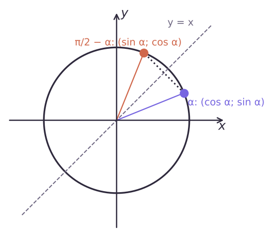

Теория
Как найти sin 240° или cos(11π6)? Периодичность (§ 20) позволяет отбросить целые обороты и получить угол из [0; 2π). Формулы приведения делают следующий шаг: сводят тригонометрическую функцию любого угла к функции острого угла, значения которой мы знаем или можем найти по таблице.
Вывод из формул сложения
Рассмотрим аргументы вида π2 ± α, π ± α, 3π2 ± α, 2π − α. Значения sin, cos в «опорных» точках π2, π, 3π2 — это 0 и ±1, поэтому формулы сложения (§ 24) сильно упрощаются. Например:
- sin(π − α) = sin π cos α − cos π sin α = 0 · cos α − (−1) · sin α = sin α;
- cos(π + α) = cos π cos α − sin π sin α = −cos α;
- sin(3π2 + α) = sin(3π2) cos α + cos(3π2) sin α = −cos α;
- cos(π2 + α) = cos(π2) cos α − sin(π2) sin α = −sin α.
Для тангенса и котангенса делим синус на косинус: tg(π2 + α) = sin(π2 + α)cos(π2 + α) = cos α−sin α = −ctg α. А tg(π + α) = tg α просто потому, что π — период тангенса.
Те же формулы видны и на окружности: точки поворота на α и π − α симметричны относительно оси Oy, на α и π + α — относительно начала координат, на α и −α — относительно оси Ox, а на α и π2 − α — относительно прямой y = x (абсцисса и ордината меняются местами).


Таблица формул приведения
| Аргумент | sin | cos | tg | ctg |
|---|---|---|---|---|
| π2 − α | cos α | sin α | ctg α | tg α |
| π2 + α | cos α | −sin α | −ctg α | −tg α |
| π − α | sin α | −cos α | −tg α | −ctg α |
| π + α | −sin α | −cos α | tg α | ctg α |
| 3π2 − α | −cos α | −sin α | ctg α | tg α |
| 3π2 + α | −cos α | sin α | −ctg α | −tg α |
| 2π − α | −sin α | cos α | −tg α | −ctg α |
Каждая формула верна при всех α, при которых определены обе её части. Учить таблицу наизусть не нужно — её заменяет правило.
Мнемоническое правило
- Меняется ли функция? Если в аргументе π2 или 3π2 (точки на оси Oy, «киваем головой вверх-вниз: да») — функция меняется на «кофункцию»: sin ↔ cos, tg ↔ ctg. Если π или 2π (точки на оси Ox, «качаем головой: нет») — функция остаётся той же.
- Какой знак? Считаем α острым углом, определяем четверть исходного аргумента и ставим тот знак, который имеет исходная функция в этой четверти.
Пример: cos(3π2 − α). В аргументе 3π2 — косинус меняется на синус. При остром α угол 3π2 − α лежит в III четверти, косинус там отрицателен. Итого cos(3π2 − α) = −sin α. Сверься с таблицей!
Знак определяют по исходной функции, а не по новой. sin(3π2 + α): угол в IV четверти, синус там отрицателен — получаем −cos α, хотя косинус в IV четверти положителен.
Правило выведено для формул и годится при любом α, но знак ищем, мысленно считая α острым. Не надо подставлять конкретное значение α из условия: cos(π + α) = −cos α и при α = 100°.
Разбор примеров
Докажи по формулам сложения: а) cos(3π2 − α) = −sin α; б) ctg(π − α) = −ctg α.
а) cos(3π2 − α) = cos(3π2) cos α + sin(3π2) sin α = 0 · cos α + (−1) · sin α = −sin α.
б) sin(π − α) = sin α, cos(π − α) = cos π cos α + sin π sin α = −cos α; ctg(π − α) = −cos αsin α = −ctg α.
Вычисли: а) sin 210°; б) cos(−7π6); в) tg 300°; г) sin(11π3).
а) sin(180° + 30°) = −sin 30° = −1/2.
б) Косинус чётный: cos(7π6) = cos(π + π6) = −cos(π6) = −√3/2.
в) tg(360° − 60°) = −tg 60° = −√3.
г) 11π3 = 4π − π3, период 2π: sin(−π3) = −√3/2.
Упрости sin(π − α) · cos(π2 + α)tg(π + α) · ctg(3π2 − α).
sin(π − α) = sin α; cos(π2 + α) = −sin α; tg(π + α) = tg α; ctg(3π2 − α) = tg α.
Получаем −sin²αtg²α = −sin²α · cos²αsin²α = −cos²α.
Вычисли cos²(π8) + cos²(3π8).
3π8 = π2 − π8, поэтому cos(3π8) = sin(π8). Сумма равна cos²(π8) + sin²(π8) = 1.
A, B, C — углы треугольника. Докажи, что sin(A + B) = sin C и cos(A + B2) = sin(C2).
A + B = π − C, поэтому sin(A + B) = sin(π − C) = sin C.
A + B2 = π2 − C2, поэтому cos(A + B2) = cos(π2 − C2) = sin(C2).
Вычисли tg 1° · tg 2° · tg 3° · … · tg 89°.
tg(90° − α) = ctg α, поэтому tg 89° = ctg 1°, tg 88° = ctg 2°, …, tg 46° = ctg 44°. Разобьём множители на пары tg k° · tg(90° − k)° = tg k° · ctg k° = 1, k = 1, …, 44, и останется tg 45° = 1. Ответ: 1.
Задачи урока
Реши в тетради. Ответы разберём на занятии.
Тест к уроку
Домашнее задание
Задачи Д1–Д6 ниже. Заполнить в тетради таблицу формул приведения с помощью мнемонического правила и проверить три строки по формулам сложения; знак определять по исходной функции.